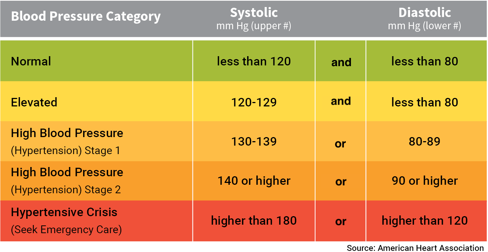

Click “Show answer” button after a question to see the solution.
If a question does not have solution, it means that solution can be easily obtained by running code in Thonny.
Short questions
What would each of the following Boolean expressions evaluate to?
1x = 32y = 53z = 745print(x != y - 2)67print(x >= 0 and x < 10)89print(x < 0 and x < 10)1011print(x < y or y < z)1213print(x < y and y < z)1415print((x + z) // 2 == y)
What would each of the following Boolean expressions evaluate to?
1a = True2b = False3c = True45print(a or b and c)67print(not a and b and c)89print(not a or b or c)1011print(not (a or b or c))
Suppose x and y are integers. Express the following Boolean expressions in an equivalent form without the not operator.
1. not (x == y)
2. not (x > y)
3. not (x < y)
4. not (x == y and x < 2)
5. not (not (x == y))
In general, we can use De Morgan’s laws as follows:
- not (x and y) not x or not y
- not (x or y) not x and not y
What will be the sequence of values generated by the following range function calls?
1range(5, 10)2range(5, 10, -1)3range(10, 5, -1)4range(10, 5)5range(5, 51, 5)
You may try the function call in a for loop to print the values as below:
1for i in range(5, 10):2 print(i)
What will be output of each print statement below?
1s = "hello everyone"23print(s[1:])4print(s[1:len(s)-3])5print(s[len(s)-8:])6print(s[:9])7print(s[11:])8910# There will not be an error below.11# Even though 16 is out of index bounds, slicing allows it.12print(s[11:16])1314# Will there be an error below?15# Note that below is not slicing, it is indexing16print(s[16])

Programming Questions
Write a program (nuclear_plant.py) that takes as input from the user the coordinates (in km) of a nuclear power plant as well as the coordinates of a house location. The program should display in which zone the house is (with respect to the power plant) in case of emergency (see the image below to know how far a zone is from power plant). If the house is outside all the zones, print “Outside all zones”.
Assume that, for any zone, inner circle boundary is included but outer circle boundary is not inlucuded in the zone.
1x1 = int(input("Enter power plant x-coordinate: "))2y1 = int(input("Enter power plant y-coordinate: "))3x2 = int(input("Enter house x-coordinate: "))4y2 = int(input("Enter house y-coordinate: "))56# compute distance between power plant and house789# Set value of zone according to the distance101112print(zone)
Example 1:
Enter power plant x-coordinate: 2 Enter power plant y-coordinate: 5 Enter house x-coordinate: 10 Enter house y-coordinate: 12 Contigency Planning Zone
Example 2:
Enter power plant x-coordinate: 1 Enter power plant y-coordinate: 1 Enter house x-coordinate: 30 Enter house y-coordinate: 25 Ingestion Planning Zone
Blood pressure is an important risk factor for various cardiovascular problems. It is characterized by two numbers: the systolic and diastolic pressures. The table below indicates how to interpret the blood pressure:
Task 1: Write a program (blood_pressure.py) that prompts the user to enter their systolic and diastolic pressures. It then prints the corresponding blood pressure category. Assume the pressure values to be integers.
1systolic = int(input("Enter systolic blood pressure: "))2diastolic = int(input("Enter diastolic blood pressure: "))34# Set category using systolic and diastolic pressures567print("Blood pressure category is:", category)
Task 2: Sometimes, the user may mistakenly exchange their systolic and diastolic measurements when entering inputs, resulting in , which is impossible. Modify your program so that if such a case is detected, the values of the systolic and diastolic variables are swapped, and the correct output is produced despite the user’s error.
Write a function find_max that takes 3 integers a, b, c as arguments and returns maximum of the three values. Use chained if-statement and not the built-in max function.
Another solution which is a bit simpler:
Write a function harmonic_sum(n) that returns sum of the first n terms of the harmonic series:
Write a function remove_spaces that removes spaces from its argument string and returns the resulting string. e.g.
- "a short string" → "ashortstring"
- " spaces here and there" → "spaceshereandthere"
Write a function reverse_string that takes a string as argument, and returns another string that is reverse of the argument. e.g. "hello" → "olleh".